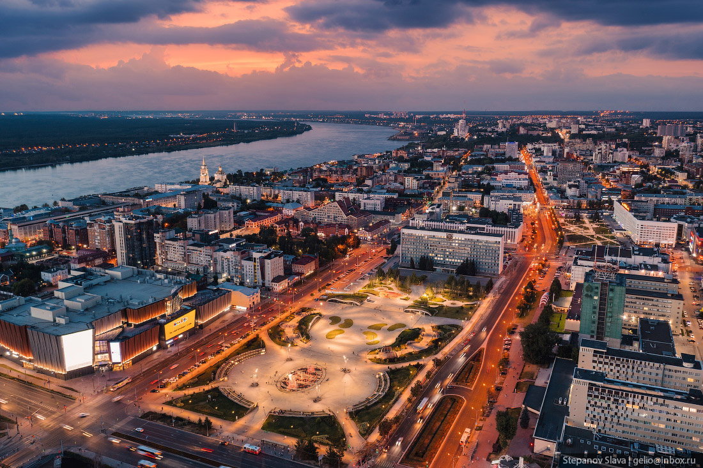

Красивая Пермь

Пермь - Город на востоке европейской части России, в Предуралье, на берегах реки Камы, ниже впадения в неё реки Чусовой, административный центр Пермского края и Пермского района, транспортный узел на Транссибирской магистрали, речной порт, имеет статус города краевого значения и городского округа. Крупный многоотраслевой промышленный, научный и культурный центр Урала. Население - 1027153 чел., пятнадцатый по численности населения город России.